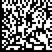

Please press the "next" button to proceed.
Our API functions with either one of two endpoints: “/generate” or “/verify.”
• a PDF document
• and a location of where you would like our, Steganographic Data Matrix, to
be
placed
on. You have 4 options: top-left, top-right, bottom-left and bottom-right
First of all, we need to understand what steganography is.
As defined by Google, Steganography is, "the practice of concealing messages
or
information within other nonsecret text or data."
Next, what is a Data Matrix?
A Data Matrix is a two-dimensional code of black and white squares or dots
arranged in either a square or rectangular pattern, also known as a matrix.
Here is an example of one: 
So what is a Steg DM?
In layman's terms, a Steganographic Data Matrix is a DM with a secret inside
of
it. This secret is dertermined by our very own unique algorithn and is what
determines the uniqueness of not only the DM itself, but the document it is
placed on.
Now that we've established the very core of our API, the Steg DM, let us
proceed
once again to the API and the signing of a document.
The API will work to determine whether or not your document possesses the
traits
we look for when placing our signature.
If it does, then it will place a signature on the document, and return it to
you;
Otherwise, you will be prompted as what could be the cause of the issue.
1. Select a pdf file you'd like to have signed. For the document to be
accepted, it must possess enough a uni color space in the area you have
designated for the signature to be placed on. The Steg DM's physical size is
akin to 1/2 inch so please keep that in mind when choosing a document. Also,
the API will only place a Steg DM signature on the first page of any given
document.
2. Select a location where you'd like to have the Steg DM to be placed on.
3. Submit.
3.1. If your document passes, it will be signed and you will be given a copy
to download. You must download it!
3.2. Otherwise, you will be prompted as to the possible cause of the issue.
Use another document or make adjustments to your chosen one to better
accomodate for the Steg DM.
• a PDF document
What about the API?The API will work to determine whether or not your document is one that is valid, meaning it has been signed with our API's Steg DM, or otherwise.
What about the Demo?
1. Select a pdf file. Preferably one with a Steg
DM but, you may choose otherwise to see what the API will respond with.
2. Submit.
3. The API will inform you, through the demo, whether the document you have
submitted is one
that is signed with our Steg DM and is original.
3.1 You may be tempted to extract the Steg DM from a document and place it
on another to make it valid but our API will catch this and notify you that
the document that you have created is one that is falsified.
Once you've finished with the demo, please proceed to take our survey. You may view the survey through th, "take the survey" button: Located at the demo's main page.